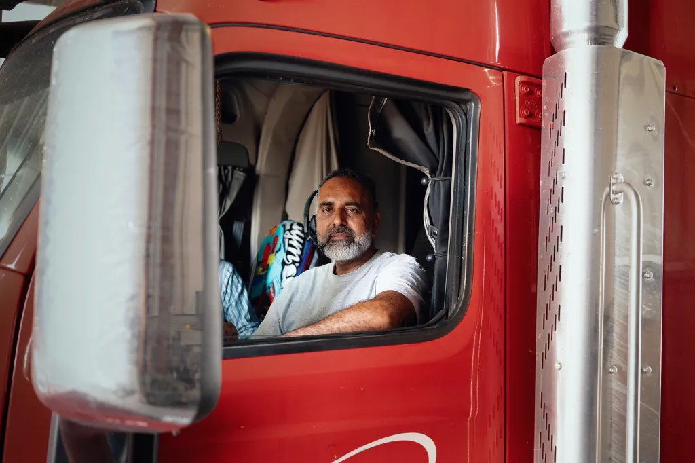
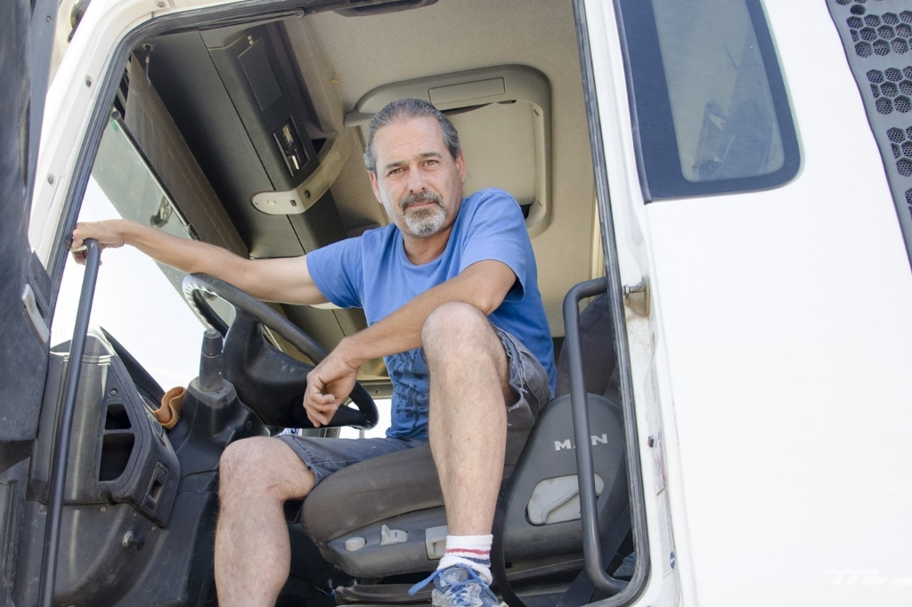

POSTA


NO HAY SITIO PARA PARAR, Y BUSCARLO CUESTA TIEMPO, KILÓMETROS Y MULTAS.
Es el déficit de plazas en España y Portugal. En toda la UE faltan 390.000.
Fuente: Comisión Europea, informe sobre aparcamientos seguros (2025)
El 43 % tarda de 30 a 60 minutos y el 24 %, más de una hora.
Fuente: DEKRA, informe de seguridad vial 2026 (encuesta a ~100 conductores)
Le pasa con frecuencia a más de la mitad. Son unos 6 litros de gasóleo por búsqueda.
Fuente: DEKRA, informe de seguridad vial 2026. Litros: estimación propia (30 l/100 km)
Por conducción, pausas y descansos en España. Van de 401 € a 6.000 € cada una.
Fuente: Comisión Europea, SWD(2024) 215 (media 2021–2022); importes: LOTT
LA RED DE INFORMACIÓN QUE PREDICE SI HABRÁ SITIO CUANDO LLEGUES.
Mostramos en tiempo real cuánta demanda tiene cada área de servicio y predecimos cuántas plazas libres habrá cuando llegue cada camión.
No damos certezas: gestionamos la incertidumbre y decimos qué probabilidad hay de encontrar sitio.
Cuando un camión nos pregunta dónde parar, también nos dice cuándo va a llegar. Más consultas, mejor predicción; mejor predicción, más usuarios.
Empezamos con datos de las áreas, de la DGT y de las primeras flotas.
API para navegadores y plataformas de flota, como Google Maps, TomTom o Webfleet.
App para transitarios, empresas de logística con flota y autónomos.
EL ALGORITMO PREVÉ EL COLAPSO 90 MINUTOS ANTES
SOLO POSTA MIDE ESPAÑA Y PREDICE SI HABRÁ SITIO CUANDO LLEGUES.
| LKW.APP TIMOCOM | Bosch Secure Truck Parking | TRAVIS / Mowiz Truck | Toll Collect + HERE | Webfleet / Frotcom | Google Maps / TomTom | POSTA | |
|---|---|---|---|---|---|---|---|
| Ocupación medida en España | ✕La estima | ◐Solo sus plazas | ◐Solo sus plazas | ✕Solo Alemania | ✕ | ✕ | ✓ |
| Predicción a la hora de llegada | ✓Hasta 15 h | ✕ | ✕ | ✕ | ✕ | ✕ | ✓ |
| API para otras plataformas | ✓ | ✓Bosch L.OS | ◐TRAVIS sí, Mowiz no | ✓Vía HERE | ✓ | — | ✓ |
| Reserva de plaza | ✓Con TRAVIS | ✓ | ✓ | ✕ | ◐Webfleet, con Bosch | ✕ | ◐Con socios |
| Precio | Gratis | Por noche | Por noche | Gratis | 15–35 € vehículo/mes | Gratis | 15 € camión/mes |
✓ sí · ◐ en parte · ✕ no. POSTA: producto en desarrollo, piloto en la AP-7 en el cuarto trimestre de 2026. Fuentes: webs y notas de prensa de cada empresa (2024–2026), transport-online.de, VerkehrsRundschau, ERTICO, subger.com (precios de Webfleet).
PAGA LA EMPRESA. POR CAMIÓN, CADA MES.
Ocupación prevista, paradas según el tacógrafo y alertas, dentro del software de flota que ya usa la empresa.
539.000 CAMIONES DE LARGA DISTANCIA BUSCAN DÓNDE DORMIR CADA NOCHE.
Todas las tractoras de la UE.
Los corredores donde empezamos.
El 2,6 % de las tractoras de España: 15 flotas directas y 3 plataformas de flota.
Fuente: Eurostat, tran_r_vehst, cabezas tractoras 2024 (UE 2.260.141; España 258.920; Francia 223.215; Portugal 56.709). Las tractoras son el camión típico de la larga distancia. El SOM es un supuesto propio.
HABLAR CON QUIENES VIVEN LA CARRETERA.
Validaron el miedo nocturno, la soledad y la necesidad absoluta de una plaza asegurada.
Confirmaron el terror a la inmovilización de camiones con carga en frío perecedera.
«Si me quitas la incertidumbre antes de Girona, pago la cuota sin pensarlo.»
DE STARTCAMP A LOS CORREDORES EUROPEOS.
Piloto Alpha
Pruebas con 120 camiones en la AP-7 y los primeros 2 parkings SSTPA asociados en Cataluña.
Corredor Atlántico
Integración de conectores FMS y apertura de plazas en el paso de Irún / Biriatou.
Escalado UE
Expansión en el arco mediterráneo francés y aplicación a fondos europeos de transporte.
EL EQUIPO IDÓNEO PARA RESOLVERLO.
Estrategia & B2B
Relación con flotas, unit economics y cumplimiento estricto del régimen sancionador LOTT.
Ingeniería & Datos
Arquitectura del algoritmo EAS y conexión de flujos de tacógrafo satelital G2V2.
Diseño Humanista
Interacción limpia en cabina para no distraer al conductor mientras conduce.